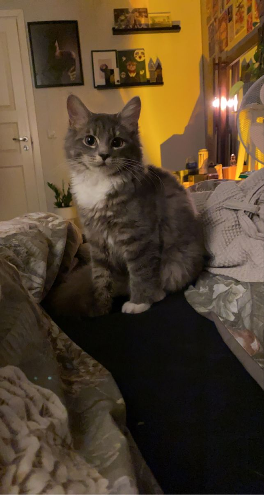

References
- How the Web was Born: The Story of the World Wide Web - James Gillies, R. Cailliau
- Wikipedia - Tim Berners-Lee
- ResearchGate - Web 2.0: A Definition, Literature Review, and Directions for Future Research
- Wikipedia - Vannevar Bush
- Mozilla - Getting Started with the Web
- YouTube - Demystified
- howstuffworks - How web pages work
- freeCodeCamp - What is HTML
- javatpoint - What is CSS
